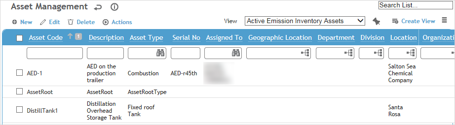
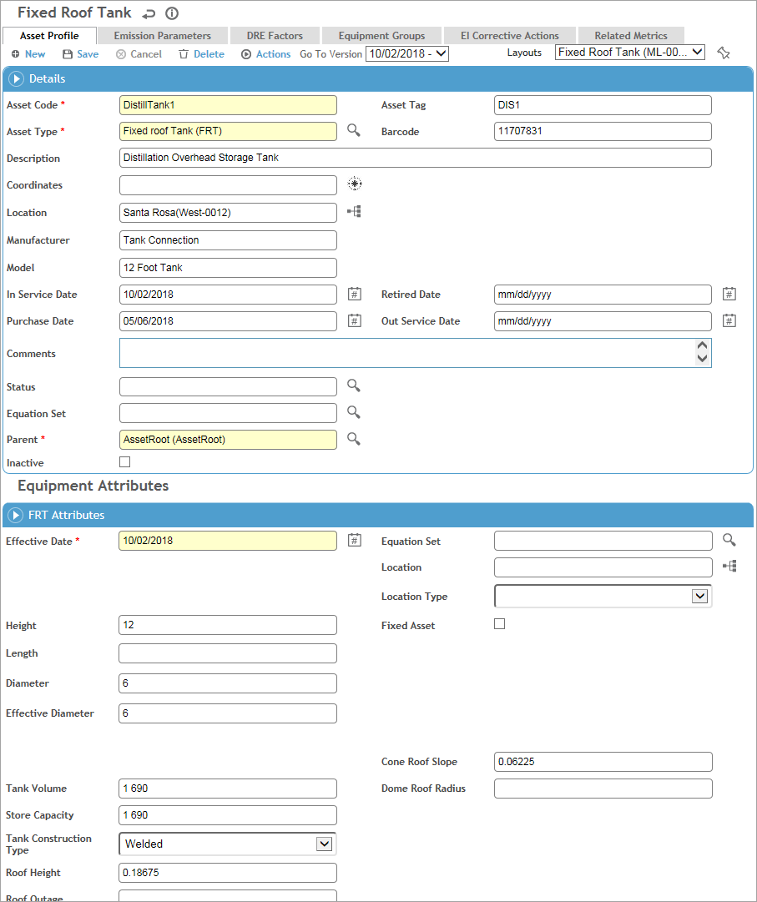
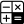
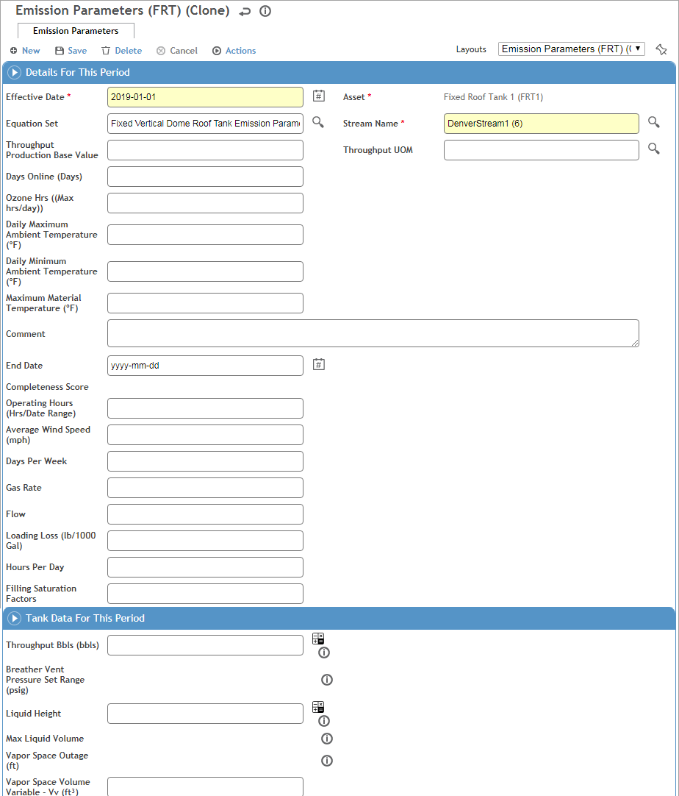

In the Emissions Inventory menu, click Asset Management and use the provided fields and views to filter the list.

Use the Site Selector (at the top of the Emissions Inventory menu) to view just the assets related to a particular GDDLOFB node.
If you just need to change any of the fields that display on the list view for one or more records, select the checkbox beside the record(s) and click Edit to do an inline edit of these fields without opening each record (be sure to click Save when you’re finished).
Click a link to edit a record, or click New.

To record multiple similar assets, record and save one, then choose Actions»Copy. A new asset record is created with most of the same information; open the link to change or add other information.
On the Asset Profile tab:
-
In the Details section, record general information about the device.
-
In the Equipment Attributes section, record specific information about the asset.
To update the attributes on an existing record, choose Actions»Add a New Asset Data Version. When you save the record, a new version is created for the new effective date. When you open the record the currently effective version is displayed; to view an older version use the Go To Version fields at the top and bottom of the form.
Some fields may be calculated and read-only; other calculated fields may allow input but you can click beside it to restore the calculated value.
beside it to restore the calculated value.
-
Any user-defined fields captured in the Equipment UDFs section are versioned along with the Equipment Attributes section.
You can assign an Equation Set to the asset (in the Details section) that applies to the Details only, or you can assign an Equation Set that applies to a version of attributes only.
The Emission Parameters tab stores emission parameter values that can then be used in emission calculations. Create as many records as required to associate the asset to streams of chemicals (however each record must have a unique Asset and Stream Name combination).
Click New and enter the Effective Date and select the Stream Name. Record any other parameters as required. You can include an End Date to set a date range for calculation purposes. If the End Date is blank, the emissions period will be considered the Effective Date to the current date.
Some fields may be calculated and read-only; other calculated fields may allow input but you can click

beside it to restore the calculated value. To view the equation formula and inputs for a calculated field, click beside it.When you save the record, a background calculation will determine which Equipment Attribute field(s) and/or Equipment UDF(s) will be used in a calculated field, and the asset will be added to the Related Assets tab on the stream’s record. If you selected a Source Test Sample, the asset will be added to the Related Assets tab on the source test data record.

Use the DRE Factors tab to define destruction removal efficiency (DRE) properties for a chemical. Click New and select the Chemical and enter the Effective Date and DRE Value.
The Equipment Groups tab displays any groups that the asset record is part of (in the EquipmentGroup look-up table), but this functionality is currently not used by emissions inventory calculations.
If added to your layout, you can use the EI Corrective Actions tab to associate finding and actions with an air emissions asset and assign corrective actions. For information about recording an action, see About Findings and Actions.
The Related Metrics tab displays any custom metrics that have been assigned to this asset. Click a link to view the custom metric record.
Click Save.